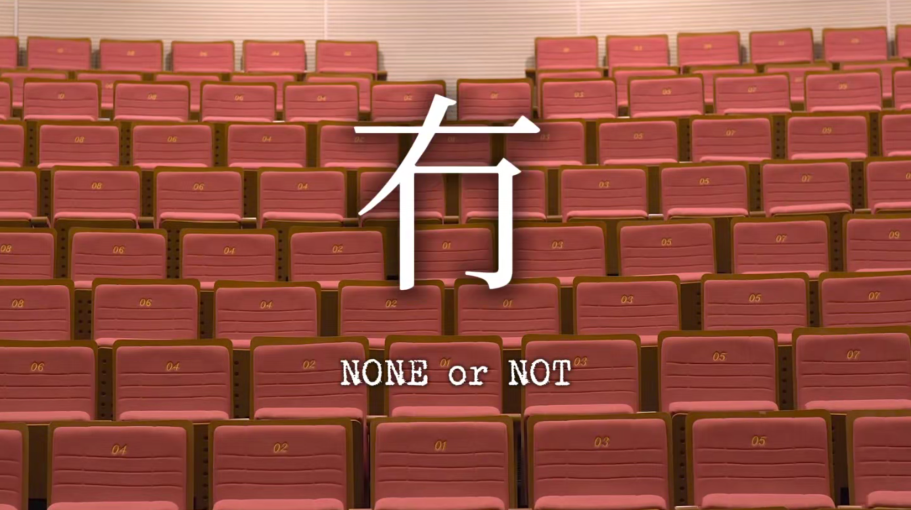
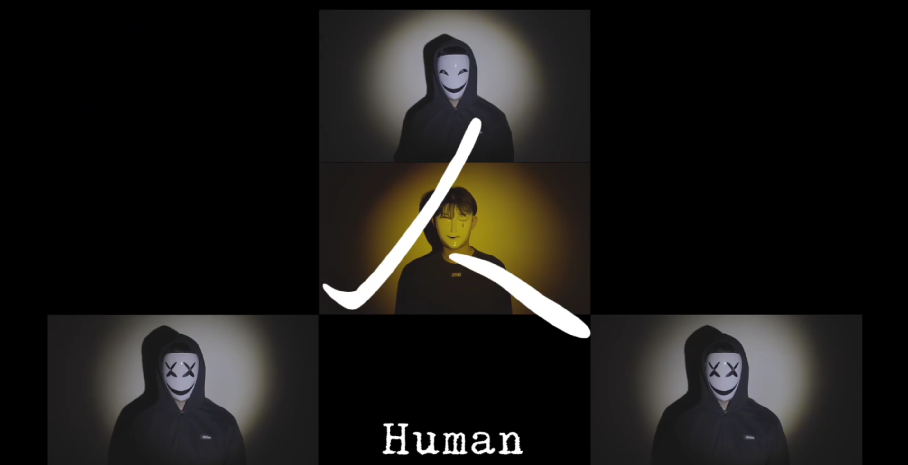
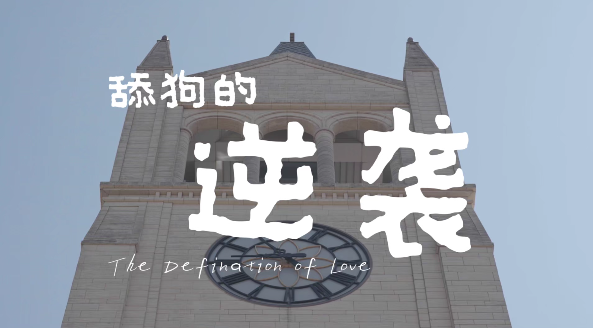
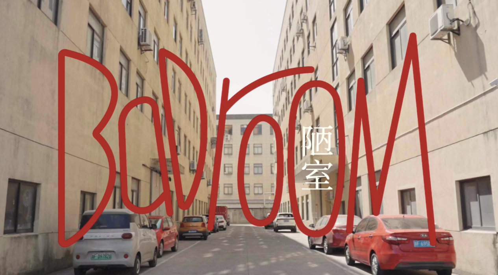
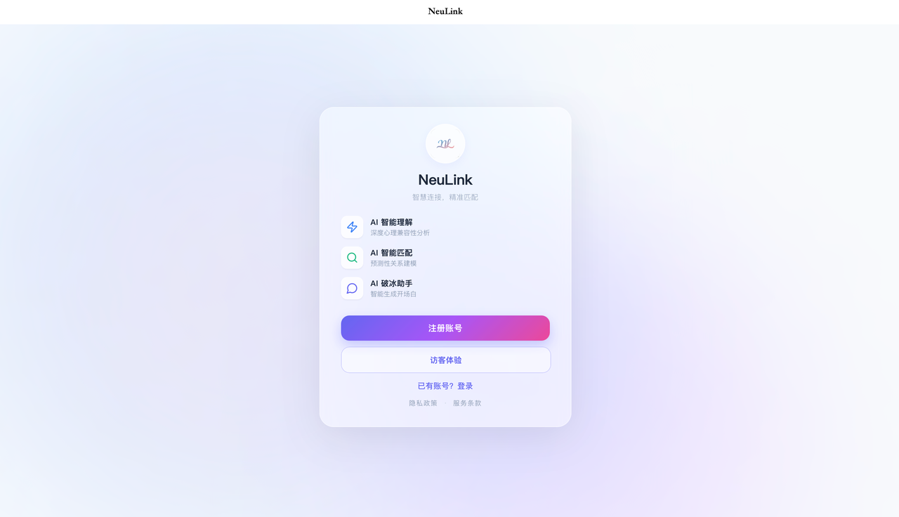

吴悠悠.
Video Director / Editor
生命的意义就在于你能创造这过程的美好与精彩，生命的价值就在于你能够镇静而又激动地欣赏这过程的美丽与悲壮。——史铁生《好运设计》
Background / 简历履历
硕士 2024 – 2027
浙江大学
戏剧与影视 (国际联合商学院)
本科 2020 – 2024
华东师范大学
广播电视编导
视频制作 / Video
- Premiere Pro
- Final Cut Pro
- 剪映专业版
视觉设计 / Design
- Photoshop
- Lightroom
- Figma
综合能力 / Skills
- 数据分析
- Excel / Office
- 项目管理
语言 / Language
- IELTS 7.0
- CET-6
- CET-4
Selected Works / 导演作品

在小红书查看
极光之夜最佳影片
任编剧&剪辑&副导演
冇

在小红书查看
艺术创作方法研究课程优秀影片
任编剧&导演&制片
人 human

在小红书查看
PSYCSHORTS心理科普短视频大赛获奖作品
任导演&编剧&主演&后期
舔狗的逆袭

在小红书查看
纪录片创作课程优秀影片
任导演&编剧&摄影&后期
BADROOM

在小红书查看
浙大优秀实践成果
任编剧&导演&后期
在下姜村感知幸福

在小红书查看
优秀寒假社会实践成果一等奖
任导演&编剧&后期
党建引领驱动山海共富
2024学院奖作品
健胃消食片
2024学院奖作品
雀巢茶萃
独立负责
丸味宠物新年广告
任后期
奇瑞QQ官方广告
重点跨界项目 Featured
点击体验NeuLink
NeuLink
一款基于 AI 的校园社交产品。负责完整的产品概念设计、UI视觉逻辑推演以及初期用户增长策略制定。
设计输出
UI设计 / 产品视觉
核心模块
产品逻辑 / 增长引擎

App Interface & Interaction Flow
Let's Create / 合作联系